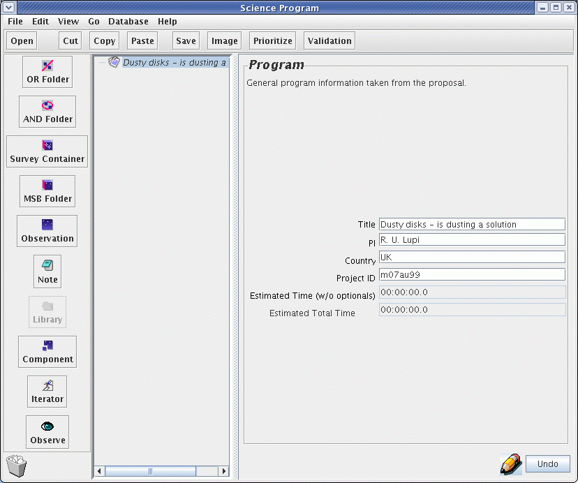
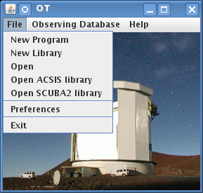
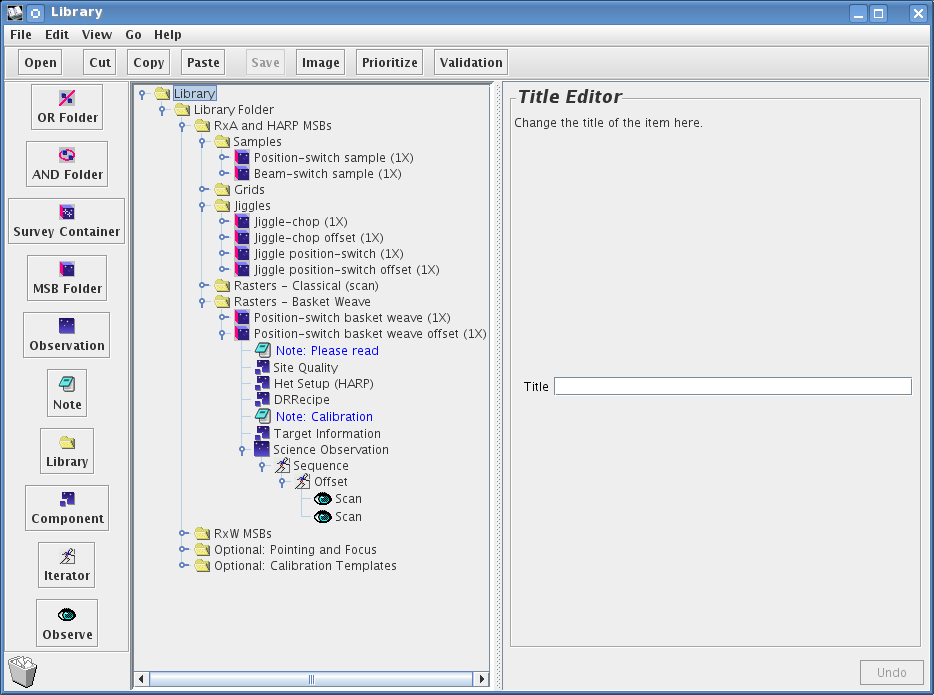
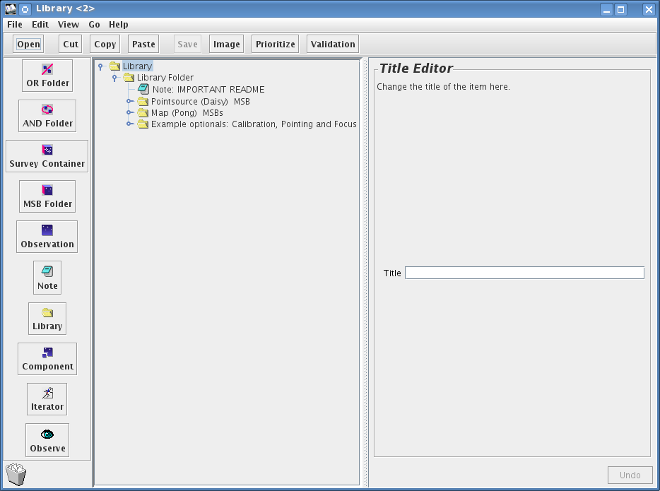
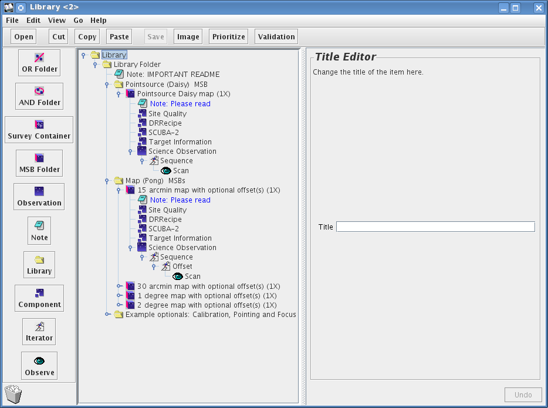
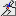
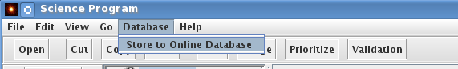

The JCMT OT software enables users to fully specify the observations required to be carried out at the telescope for a specific program. In this section we describe how to initially create a program, how to populate a program with MSBs (for information bout what is an MSB see here) from a library provided, and how to save/upload your program to our database.
To begin you should initialise the JCMT OT. Remember that the software must already be downloaded and installed for these pages to be relevant (see our software installation page — make sure you have downloaded the latest version!)
You will see two windows pop up. One has a colour picture of the telescope - that is the JCMT root window. You can use its menus to open and save files, access the MSB libraries for both ACSIS and SCUBA-2, and fetch programs from our database.
The window with the JCMT line drawing, which pops on top of the root window, provides a shortcut to some of the most common startup actions, so we call that the startup screen:

For now, press "Create New Program" on the startup screen. The startup window will be replaced by an science program window. If you are using a proxy server to connect to the internet now would be a good time to configure the OT to use this — see the instructions here.
("Open Existing Program" lets you open a science program that you've previously edited and saved in your own computer system. "Fetch Program" allows you to download a program that that you have completed and uploaded to our observing database. To download the program, of course, you will need the project ID (e.g. m15ai77) and password.
Look at your blank science program window. It's essentially divided in four sections:
The bar between the program panel and the editor panel can be dragged around to enlarge or reduce them.
Currently, the only thing in your program panel is a "Science Program" line. We'll add things to it later. For now, take the time to fill in its details in the Science Program editor on the right. The most important field here is the Project ID field. You have to get this right otherwise you will not be able to submit your program to us. Your project ID is what you were assigned when you submitted your proposal for telescope time. It is of the form m15a followed by a country letter and a two digit proposal number (sometimes followed by a letter).

Also on the panel are estimates of the total time the specified program will take with and without optional observations, which are currently both 0 since we haven't specified any observations yet.
Now that we've done something we can save it. Open the File menu in your Science Program window and choose "Save As...".

You will be prompted for a filename and so on:

The file format is XML, which is a text (not binary) format that you can read in later with the OT, or email to your collaborators. If you have a question, you can also email your file to your "Friend of the Project" along with your question.
You might have noticed that the title of your Science Program was italics and now that you've saved the file, the title is normal font. When you edit a component of your Science Program its title changes font to indicate that you need to save your work.
The libraries containing commonly used MSBs can be found by by going to the JCMT root window.

By clicking on the ACSIS library in the JCMT root window a new window will appear displaying a number of folders containing commonly used ACSIS MSBs:

It is possible to open up and look inside the key ACSIS library components see inside the various types of MSBs.

By clicking on the SCUBA-2 library in the JCMT root window new window will appear displaying a number of folders containing commonly used SCUBA-2 MSBs:

It is possible to open up and look inside the key SCUBA-2 library components see inside the various types of MSBs.
The best way to get a feel for the various elements within an MSB and its structure it is best to copy over an existing one from either the ACSIS or SCUBA-2 library into a blank Science Program.Remember a Science program will contain one or more MSBs - depending on the specific program of work.
In order to produce this example I have copied over the HARP "Position switch sample" from the ACSIS library into an empty Program.
To open up the MSB click on the push "lever". Inside you will find a Note, a Site Quality Component, Het Setup component, a DR Recipe component, a second Note (for calibrations), a Target Info. component, and an observation component which is labeled "Science Observation". Inside the "Science Observation" component we see a Sequence iterator, a Repeat iterator and finally a stare:

In order to produce this example I have copied over the "Point Source Daisy map" from the SCUBA-2 library into an empty Program.
To open up the MSB click on the push "lever". Just as we saw in the ACSIS example we find a Note, a Site Quality Component, Het Setup component, a DR Recipe component, a Target Information component, and an observation component which is labeled "Science Observation". Inside the "Science Observation" component we see a Sequence iterator, and finally a stare:

The various icons that appear when making your science program/MSB are specific. The explanation for what these icons are are given below:
 MSBs are individually schedulable blocks and
contain one or more fully specified science
observation and any calibrations.
MSBs are individually schedulable blocks and
contain one or more fully specified science
observation and any calibrations.
Observations are observations of a single astronomical target and contain components and a sequence.
 Components are configurators for the JCMT systems such as
the instrument (het setup component), the telescope (Target
component) and the scheduler (Site Quality component).
Components are configurators for the JCMT systems such as
the instrument (het setup component), the telescope (Target
component) and the scheduler (Site Quality component).
 Iterators are potentially multiple actions and contain other iterators and one or more eyes.
Eyes are actions that results in the actual taking of data — a single data file per eye to be precise.
Notes are a repository of useful information and can go anywhere.
When creating your own program you should ensure you:
Fill in your Science Program details
Fetch a template MSB from the library
Set the target co-ordinates
select the DR recipe
And also where necessary:
Increase the number of "observations" required and scan time if necessary for the MSBs
Modify the chop/update an off/reference position
select the instrument set up
Make an informative note for the observer
When you think you are happy with your MSB, your are strongly advised to validate the MSB before submitting it to the database. To do this, click on your science programme and press the "Validation" button on the bar above. This will tell you if there's anything seriously wrong with your MSBs — the output can be a bit cryptic though — so do contact your Friend of Project if you can't figure out what it means. You can also check individual MSBs and observations. Check the validation messages and contact your Friend of the Project if you need help.
When you are happy about the MSBs you have created you can submit them to our database. As soon as you do this, they may be observed so don't do this unless you mean it! To submit your program to our database, pull down the Database menu on your Science Program window:

A little window will pop up using the Project ID that you put into your Science Program at the start (see Your science program). It will also ask you for a password.

When you do get your password and submit your program, you will receive a summary of all the MSBs contained in your program. Check to make sure that everything is okay. If the are major problems with you science program the database may complain and refuse to accept the submission. If you don't understand what the problem is, email us along with a copy of the problematic project, but check the Frequently Asked Questions for hints first.
One last thing: don't forget to save your Science Program to your local file too. But — always start a new session by fetching the program from our database before making any changes, since our system modifies your science program to indicate which observations have been observed.
Note that throughout this document integration times are the "on"-source time only, instead of "on+off" as before.
There is a section on Advanced Topics that observers should read. There you will learn more about how the Target and Heterodyne components can interact with each other, and also how to use the AND/OR folders when you have many MSBs in your programme. Survey containers may significantly simplify your setup if used properly.